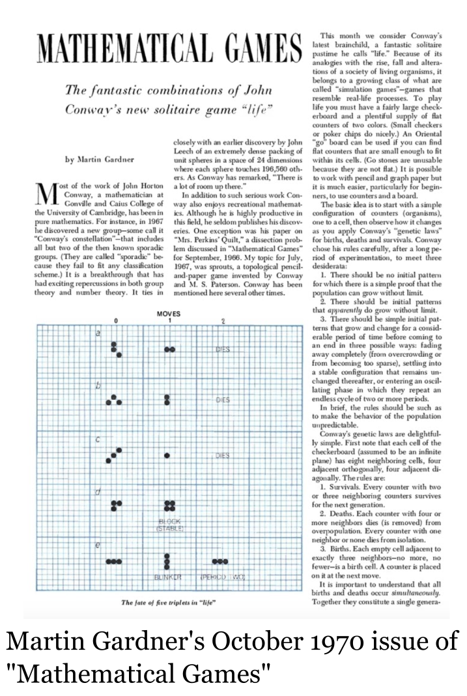
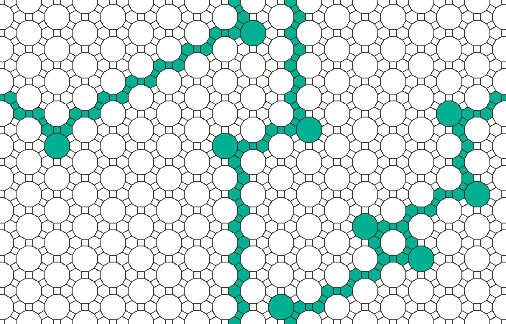

On power sums of consecutive integers
A diophantine volumetric hypercube equation, February 10, 2025
This post is about an equation that followed me for quite a few years. It began with an innocent fascination of a series of equations involving sums of square numbers (which I will display shortly) that I stumbled upon in a corner of the internet. The fascination grew into a question during a (boring) dinner party, the question concerning a generalization to arbitrary powers. The question oscillated in and out of my consciousness with varying intensity over the next decade or so. While I eventually managed to establish some answers by myself, the ultimate punctuation to the pondering came when I one day dug into arXiv.com—a moment simultaneously filled with joy and slight disappointment.
The initial fascination emerged when I saw the following set of questions relating the sum of \( N+1 \) consecutive square numbers to the sum of the next \( N \) square numbers: \begin{align} 3^2+4^2 &= 5^2, \\ 10^2+11^2+12^2 &= 13^2+14^2, \\ 21^2+22^2+23^2+24^2 &= 25^2+26^2+27^2, \\ 36^2+37^2+38^2+39^2+40^2 &= 41^2+42^2+43^2+44^2, \\ &\hspace{5pt}\vdots \end{align} A satisfying and straightforward generalization of Pythagorean triplets. The equations have a simple geometrical interpretation. The equations relate the total area of \( N+1 \) squares with side lengths being \( N+1 \) consecutive integers to the total area of \( N \) squares with side lengths being the next \( N \) consecutive integers. The equality implies that it must be possible to slice up the initial square (on the ‘Left Hand Side’ (LHS)) and distribute the pieces onto the next \( N \) squares (still on the LHS) to form a set of \( N \) squares (the ones on the ‘Right Hand Side’ (RHS)) in which all the side lengths have been increased by \( N \). Here is a self-explanatory example:
Let's begin by posing a couple of simple question: What is the general solution pattern to the above equations? For a given \( N \), are there multiple such integer solutions? Luckily, it takes no more than a few lines of algebra to find the answers. We may name the (a priori unknown) rightmost number on the LHS for \( n \). So in the above examples, \( n = 4 \), \( 12 \), \( 24 \), \(40 \), etc. The equation we want (or at least I want) to solve then reads: \[ \sum_{j=0}^N (n-j)^2 = \sum_{j=1}^N (n+j)^2. \] Now, isolate \( n^2 \) and carry out the sum to find that \[ n^2 = \sum_{j=1}^N \left[ (n+j)^2-(n-j)^2 \right] = \sum_{j=1}^N 4nj = 2nN(N+1). \] In other words, there are precisely two solutions for each \( N \), namely \( n = 0 \) and \( n = 2N(N+1) \). The first solution is not very interesting (in fact, it is trivial), and the other one establishes the general solution pattern to the above equation.
What happens if one replaces the powers by some arbitrary (positive) integer, \( d \in \mathbb{Z}^+ \), i.e., \[ \sum_{j=0}^N (n-j)^d = \sum_{j=1}^N (n+j)^d? \] In particular, are there integer solutions for all \( d \)? The value \( d \) may be referred to as the dimension of the problem. In terms of the geometrical interpretation, \( d = 1 \) relates to lines, \( d = 2 \) to squares, \( d = 3 \) to cubes, and \( d \geqslant 4 \) to hypercubes.
To get a feeling for this question, let's start by discussing two simple cases. The first case is that of \( d = 1 \), which is easily solved (for all \(N \)) by following the same steps as above to find that there is precisely one solution, namely \( n = N(N+1) \). One may therefore start speculating in whether a general solution could be (or at least be close to) \( n = dN(N+1) \). We will get back to this. The second case is that of \( N = 1 \) for arbitrary \( d \). The observant reader will already have noticed this as a special case covered by the famous Fermat's Last Theorem, spectacularly proven by (Sir) Andrew Wiles in the 90s. Specifically, the theorem ensures that there are no non-zero integers \( a,b,c,d \), with \( d \geqslant 3 \), such that \( a^d + b^d = c^d \). So while the case \( N = 1 \) is already ruled out for \( d \geqslant 3 \), could there be solutions for large (enough) \( N \), at least for some \( d \geqslant 3 \)? What about, for example, the case of \( N = 2 \) and \( d = 3 \) (which relates to the volume sum of integer-sided cubes)?
In general, we are seeking a non-trivial integer root of an equation, so the equation is said to be a diophantine equation. Secondly, the equation relates to volumes of hypercubes, so let's call it a diophantine volumetric hypercube equation. A convenient formulation of the problem is obtained by collecting all terms on one side and seek the integral root(s) of the following polynomial: \begin{align} p_{N,d}(x) &:= x^d - \sum_{j=1}^N [(x+j)^d-(x-j)^d] \\ &= x^d - \sum_{k=0}^{d} \binom{d}{k} x^k \left[1 - (-1)^{d-k} \right] \sum_{j=1}^N j^{d-k}. \end{align} For convenience (as will become clear in a moment), we will further distinguish between the cases of even and odd dimension \( d \). For even \( d = 2m \), the polynomial \( p_{N,d} \) has no constant term since terms with even \( k \) vanish. Thus \( p_{N,2m}(0) = 0 \), which is precisely the trivial (and uninteresting) solution found above for \( d = 2 \). Modulo this trivial solution the polynomial \( p_{N,d} \) for even and odd dimension take the respective forms \begin{align} \tilde{p}_{N,2m}(x) := p_{N,2m}(x)/x &= x^{2m-1} - 2\sum_{k=0}^{m-1}\binom{2m}{2k+1} x^{2k}\sum_{j=1}^{N}j^{2(m-k)-1}, \\ p_{N,2m-1}(x) &= x^{2m-1} - 2\sum_{k=0}^{m-1}\binom{2m-1}{2k} x^{2k}\sum_{j=1}^{N}j^{2(m-k)-1}. \end{align}
Lemma I (monotonicity): The polynomial \( p_{N,d} \) has a unique, non-trivial root in \( \mathbb{R}^+ \). Moreover, the sequence of (non-zero) roots \( \lbrace x_{N,d}:~p_{N,d}(x_{N,d})=0 \rbrace_{N=1}^{M} \) is monotonically increasing, i.e., \(x_{1,d} < x_{2,d} < x_{3,d} < \dots < x_{M,d}\) for all positive integers \(M\).
Proof of Lemma I: The proof follows from a special case of Descartes' rule of signs, which states that for a polynomial \( p \) with real coefficients, the number of real positive roots is the equal to or less than (by an even number) the number of sign changes of the (ordered) coefficients. Let us apply the rule to the particular case of polynomials of the form: \[ q_{2m-1}(x) = x^{2m-1} - \sum_{k = 0}^{m-1} a_{2k} x^{2k} \] with \( a_{2k} > 0 \) for all \( k \). Since the polynomial \( q \) possesses one coefficient sign change, Descartes' rule of signs tells us that \( q \) must have precisely one positive real root. Furthermore, since \( q_{2m-1}(x) < 0 \) for \( x \leqslant 0 \) and the real root of \( q \) is unique, we know that if we have \( a,b \in \mathbb{R} \) such that \( q_{2m-1}(a) < 0 \) and \( q_{2m-1}(b) = 0 \), then \( a < b \). Since the specific polynomials \( \tilde{p}_{N,2m} \) and \( p_{N,2m-1}(x) \) are both of the form \( q_{2m-1} \) discussed above, one may conclude that \( p_{N,d}(x) \) must have a unique root in \( \mathbb{R}^+\) by virtue of Descartes' rule of signs. To show that the sequence of roots is monotonically increasing, assume that we have \( x_{N,d} \in \mathbb{R}^+ \) such that \( p_{N,d}(x_{N,d}) = 0 \). One then has, from the form of \( p_{N,d} \), that \[ p_{N+1,d}(x_{N,d}) = -[(x_{N,d}+N+1)^d-(x_{N,d}-N-1)^d] < 0. \] From the sign of the polynomial, as explained above, we know that if we have \( a, b\in \mathbb{R} \) such that \( p_{N+1,d}(a) < 0 \) and \( p_{N+1,d}(b) = 0 \), then \( b > a \). Hence the root of \( p_{N+1,d} \) must satisfy \( x_{N+1,d} > x_{N,d} \). ￭
Lemma II (lower bound): The real positive root \( x_{N,d} \) of \( p_{N,d} \) satisfies \( x_{N,d} \geqslant dN(N+1) \) where the inequality is saturated if and only if \( d \in \lbrace 1, 2 \rbrace \).
Proof of Lemma II: For notational convenience, I define \( \sigma := N(N+1) \). Alluding to the proof of Lemma I, the inequalities that need to be established to prove Lemma II are: \begin{align} \tilde{p}_{N,2m}(2m \sigma) = &(2m \sigma)^{2m-1} \\ &- 2\sum_{k=0}^{m-1}\binom{2m}{2k+1} (2m \sigma)^{2k}\sum_{j=1}^{N}j^{2(m-k)-1} \leqslant 0, \\ p_{N,2m-1}([2m-1] \sigma) = &([2m-1] \sigma)^{2m-1} \\ &- 2\sum_{k=0}^{m-1}\binom{2m-1}{2k} ([2m-1] \sigma)^{2k}\sum_{j=1}^{N} j^{2(m-k)-1} \leqslant 0. \end{align} Both of these inequalities are easily seen to hold true since the sums over \( k \) contain exclusively positive terms (with an overall minus sign), and the \( k = m-1 \) term in both expressions exactly cancels the first and only positive term. The inequalities are also seen to saturate if and only if \( m = 1 \) in both the top (\( d=2 \) ) and the bottom (\( d=1 \)) line. ￭
Lemma III (upper bound): The real positive root \( x_{N,d} \) of \( p_{N,d} \) satisfies \( x_{N,d} < dN(N+1) + \frac{(d-1)(d-2)}{12d} \).
Proof of Lemma III: A qualified hypothesis (which will be shown true) is that the root asymptotically approaches (with \( \sigma = N(N+1) \) as before) \[ x_{N,d} \sim d\sigma + \varepsilon_d, \] where \( \varepsilon_d \) is independent of \(N\). I make use of an asymptotic expansion (in \( N\)) of the real root and retain the three leading order terms in \(N\) in the binomial expansion of \( p_{N,d} \). As such, while the LHS containes the two leading order terms \[ (d\sigma + \varepsilon_d)^d \sim d^d \sigma^d + d^d \sigma^{d-1} \varepsilon_d, \] the three leading order terms from the RHS are: \begin{align} & \sum_{k=0}^{d} \binom{d}{k} (d\sigma + \varepsilon_d)^k \left[1 - (-1)^{d-k} \right] \sum_{j=1}^N j^{d-k} \\ &\sim d^d \sigma^d + \frac{(d-1)(d-2)d^{d-2}\sigma^{d-1}}{12d} + (d-1)d^{d-1} \varepsilon_d. \end{align} When equating \( p_{N,d}(x) = 0 \) consistently to this order, we thus see that \[ \varepsilon_d = \frac{(d-1)(d-2)}{12d}. \] Here, I used the fact that \( \sum_{j=1}^N j^3 = (\sigma/2)^2 \). The asymptotic solution is, by virtue of Lemma I, an upper bound on the root \( x_{N,d} \). In fact, by employing the function AsymptoticSolve in Mathematica one can both verify the above and simultaneously find the subleading correction in the asymptotic expansion: \[ x_{N,d} = d\sigma + \varepsilon_d - \frac{(d-1)(d-2)(2d(d-2)-1)}{180 N^2 d^3} + \mathcal{O}(1/N^3), \] which also shows that the correction is negative. ￭
A useful observation can be made by employing clock arithmetic. I partition putative integer solutions in the congruence classes of \( \sigma = N(N+1) \). The integers can thus be expressed as the collection of congruence classes, \( \mathbb{Z} = \lbrace [0]_{\sigma}, [1]_{\sigma}, \dots, [\sigma-1]_{\sigma} \rbrace \), where \( [j]_{\sigma} = \lbrace m : m \equiv j~(\mathrm{mod}~\sigma) \rbrace \).
Proposition I: Any integer root \( n \) of \( p_{N,d} \) must be an integer multiple of \( \sigma = N(N+1) \), i.e., \( n \in [0]_{\sigma}\).
Proof of Proposition I: I prove the proposition by contradiction. As such, assume that the integral root of \( \tilde{p}_{N,2m} \) (the proof for \( p_{N,2m-1} \) is completely analogous) satisfies \( n \not\in [0]_{\sigma} \), i.e., there exists a \( j\in \lbrace 1, 2, \dots, \sigma-1 \rbrace \) such that \( n \in [j]_{\sigma}\). The condition that \( \tilde{p}_{N,2m}(n) = 0 \) is equivalent to \[ n^{2m-1} = 2\sum_{k=0}^{m-1}\binom{2m}{2k+1} n^{2k}\sum_{j=1}^{N}j^{2(m-k)-1}. \] Let's calculate the remainder (modulo \( \sigma\)) of both sides of this equation to enforce a contradiction. Since \( \sum_{j=1}^N j^{2l-1} \) is divisible by \(\sigma/2\) for all \( l\in \mathbb{Z}^+\) (showing this is a nice little exercise and apparently dates back to Johann Faulhaber and 1631) all terms on the RHS are divisible by \( \sigma \), so the right hand side is an element of \( [0]_{\sigma} \). Since \( n \in [j]_{\sigma} \), there exists an integer \(p\) such that \( n = p \sigma + j\). Using the binomial expansion on the LHS of the above equation then yields \[ n^{2m-1} = j^{2m-1} + \sum_{k=0}^{2m-2} \binom{2m-1}{k} (p\sigma)^{2m-1-k} j^k \equiv j^{2m-1}~(\mathrm{mod}~\sigma), \] which implies that \( n^{2m-1} \not\in [0]_{\sigma}\) Here I used that \( j\equiv 0 \Rightarrow j^a \equiv 0~(\mathrm{mod}~\sigma)\), so \(j^a \not\equiv 0 \Rightarrow j\not\equiv 0~(\mathrm{mod}~\sigma)\) for any positive integer \(a\). ￭
We now have the building blocks to exclude a big chunk of the a priori solution space:
Theorem: The diophantine equation \( p_{N,d}(n) = 0 \) has the unique non-zero integral solution \( n = dN(N+1)\) for all positive integers \( N \) and \( d \in \lbrace 1, 2 \rbrace\). For \( d \geqslant 3\) the equation has no non-zero integral solutions for \( d \leqslant d_{c}(N) \), where \[ d_{c}(N) = \Big\lfloor \frac12\left( 3 + 12N(N+1) + \sqrt{9(1+2N)^4-8} \right) \Big \rfloor \sim 3(1+2N)^2. \]
Proof of Theorem: Proposition I tells us that a putative integral solution must be of the form \( n = a\sigma \) for some positive integer \( a \), and Lemma II establishes that \( a > d \). The smallest possible integer multiple of \( \sigma \) is therefore \( n \geqslant (d+1)\sigma\). On the other hand, from the upper bound of Lemma III one has \( n < d\sigma + \frac{(d-1)(d-2)}{12d}\), which together imply that \( 12d \sigma < (d-1)(d-2) \). Isolating \( d \) then results in \( d \leqslant d_{c}(N) \), where \( d_c(N) \) is given above. ￭
In fact, enumerating the first few \( d_c(N) \) (see the table below) reveals that \( d_c \geqslant 26 \). So this demonstrates the minimum dimension in which integer-sided hypercubes could exist that satisfy the volumetric diophantine equation presently studied (for any \(N\)), is 26 (still assuming \( d \geqslant 3 \) since \( d = 1 \) and \( d = 2 \) have been fully solved). As the expression for \( d_c(N) \) shows, however, the lower dimensional bound rapidly increases with \(N\). For example, the dimension would have to be at least 1322 if you asked for solutions to the \( N = 10 \) problem. One remark is in place before I release the (rest of the) air from the balloon.
| \( N \) | 1 | 2 | 3 | 4 | 5 | 6 | 7 | 8 | 9 | 10 | 11 | 12 | 13 | 14 | 15 |
|---|---|---|---|---|---|---|---|---|---|---|---|---|---|---|---|
| \( d_c(N) \) | 26 | 74 | 146 | 242 | 362 | 506 | 674 | 866 | 1082 | 1322 | 1576 | 1874 | 2186 | 3266 | 3674 |
In 1967 Lander, Parkin, and Selfridge (LPS) conjectured that the diophantine equation \[ \sum_{i = 1}^N a_i^k = \sum_{j = 1}^M b_j^k, \] where \( a_i \neq b_j\) are all positive integers, only has solutions for \(M+N \geqslant k\). In terms of the diophantine equation \( p_{N,d}(n) = 0 \), this condition becomes \( 2N+1 \geqslant d \), which is easily seen to be inconsistent with \( d \geqslant d_c(N) \). Hence, if the LPS conjecture is true it follows that \( p_{N,d}(n) = 0 \) has no integral solutions for \( d \geqslant 3 \).
As initially alluded to, after having typed up the above proofs, I stumbled upon arXiv:1312.5943, in which S. Felten and S. Müller-Stach prove the absence of solutions to the same equation, \( p_{N,d}(n) = 0 \), for any \( d\geqslant 3\). In this reference, the authors actually reach some of the same partial results as I did independently above, including Lemma I, Lemma III, and Proposition I. And apparently, the \( d=2 \) case was first studied by Georges Dostor in 1879 (the year A. Einstein was born)!
References / further reading:
\( \circ \) A. J. Wiles, Modular elliptic curves and Fermat's Last Theorem, Annals of Mathematics 141, 443 (1995).
\( \circ \) S. Felten and S. Müller-Stach, A diophantine equation for sums of consecutive like powers, arXiv:1312.5943 [math.NT], December 20, 2013.
\( \circ \) L. J. Lander, T. R. Parkin, and J. L. Selfridge, A survey of equal sums of like powers, Math. Comp. 21, 446 (1967).
\( \circ \) D. E. Knuth, Johann Faulhaber and sums of powers, Math. Comp. 61, 277 (1993).
Game(s) of life
Cellular atuomata on Archimedan lattices, December 15, 2024
Welcome back! Long time, no see. In this post I will discuss cellular automata, which are discrete models of computation in the study of abstract machines and computational problems in theoretical computer science. In particular, I will look into the probably most famous cellular automaton of all, the Game of Life discovered by John Horton Conway and popularized by Martin Gardner in 1970. I will explore what happens when the rules of Conway's Game of Life, which in the literature is almost exclusively studied on a square lattice, are applied to composite lattices (composed of more than one polygon). Java code to generate the lattices constructions in this post can be found in my GitHub repository. This code complements Peter Taylor's generic code structure, which can be found and downloaded from his GitHub gist. First, a bit of history.
John Horton Conway (1937-2020) was a fascinating character and mathematician. As his biographer, Siobhan Roberts, described him: ‘John Horton Conway is perhaps the world's most lovable egomaniac. He is Archimedes, Mick Jagger, Salvador Dali, and Richard Feynman, all rolled into one.’ Conway invented the Game of Life (GoL) around 1970, an invention that included extensive experimentation of rules and variations played out on a Go board. Numberphile's Brady Haran interviewed Conway about GoL in 2014, which can be enjoyed here. Besides GoL, Conway is also known for his work on the monster group. [The monster group is formally the largest sporadic simple group and is the symmetry group of a 196 883-dimensional object].
The Game of Life was popularized by Martin Gardner in 1970. Martin Gardner (1914-2010) was an American popular science writer. Over 24 years Gardner wrote a total of 288 monthly columns of ‘Mathematical Games’ for the Scientific American. None of his columns would generate more enthusiasm and user responses than the October 1970 issue entitled ‘The fantastic combinations of John Conway's new solitaire game ‘life’’. The unprecedented volume of reader responses included discoveries that were also new to Conway. Some of the reader-reported discoveries following the post concerend structures such as ‘spaceships’/‘gliders’, ‘glider guns’, and ‘breeders’. Gliders, which are configurations that return to their initial state after a number of generations but at a different location (known to Conway before GoL was popularized), were particularly exciting as they marked a milestone towards showing that GoL could be used for arbitrary computations. In 1971, a quarterly newsletter (with an annual subscription cost of one dollar) dedicated to the rich facets of GoL named ‘LIFELINE’ was initiated. A modernized archive, containing most of the discoveries made in GoL and comprising some 2 641 articles (per December 2024), can be found on LifeWiki.
The Game of Life is made of a simple, completely deterministic, iterative rule in which the evolution of a state of binary variables is completely dictated by the initial condition (hence, whether or not it should be called a ‘game’ is a legitimate question). In its original form, GoL is played out on a square lattice. Each square encodes a binary variable and is either dead or alive, and has eight corner (or edge) sharing neighbouring squares. The rule of GoL is that from one generation to the next:
(1) living cells with exactly 2 or 3 live neighbours live on, all other cells die.
(2) any dead cell with exactly 3 live neighbours becomes a living cell.
The rule is both strikingly simple, and may seem somewhat random, but is in fact carefully chosen. In fact, the rule bears a simple ecological interpretation in the sense that life is sustained from one generation to the next only if there are not too few (underpopulation), nor too many (overpopulation) neighbouring cells alive. The Game of Life is an example of a cellular automaton, a term coined by Stanislaw Ulam and John von Neumann in their exploration of self-replicating machines in the 40s and 50s. GoL is a Turing complete automaton, which means that it can be used to emulate any Turing machine. For instance, serving as a mesmerizing example, GoL can be used to simulate GoL itself, see, e.g., this video. GoL and its multitude of variations and facets remain active research topics more than 54 years after the discovery, despite GoL being complete according to Conway (both Turing-wise and understanding-wise). However, in almost all established GoL literature, the game is played out on a square lattice. That is, up to a few well-studied exceptions of lattices such as hexagonal, triangular, and the Penrose tiling. It therefore seems natural to explore ‘Life’ on other lattices.
In searching for what had been done on other lattices, I stumbled upon a fascinating challenge posted as a Code Golf StackExchange post, inviting coding enthusiasts to implement the game of life on everything else than a square lattice. Few had considered Archimedean lattices, which are lattices made out of regular polygons as explained towards the end of my last post. And that initiated a growing urge to explore and discover oscillators, gliders, and perhaps even more complicated structures on my favorite lattices. Hours of late night coding and some 4-7 CPU hours resulted in the findings summarized in the table below.
| Archimedean lattice (face configuration) | Still life | Oscillator \(\lbrace\)periods\(\rbrace \) | Glider | Puffer train (type) |
|---|---|---|---|---|
| Truncated square \( (4,8^2) \) | ✓ | ✓ \( \lbrace 2,4,5,6,7,14 \rbrace \) | - | - |
| Kagome \( (6,3,6,3) \) | ✓ | ✓ \( \lbrace 2,5 \rbrace \) | ✓ | ✓ (clean) |
| Truncated trihexagonal \( (4,6,12) \) | ✓ (topological) | ✓ \( \lbrace 2,3,5,6,9,15 \rbrace \) | - | - |
| Star \( (3,12^2) \) | ✓ | ✓ \( \lbrace 2,3,4,5,8,9,18 \rbrace \) | - | - |
| Maple leaf \( (3^4, 6) \) | ✓ | ✓ \( \lbrace 2,3,20,24 \rbrace \) | - | - |
| Snub square \( (3^2,4,3,4) \) | ✓ | ✓ \( \lbrace 2 \rbrace \) | ✓ | - |
Instead of explaining every detail and entry of the table (which otherwise is equipped with explaining hyperlinks), I will elaborate on a handful of interesting structures.
We begin with the truncated trihexagonal lattice, which is built up of squares, hexagons, and dodecagons (the observant reader will recognize this lattice from the previous post). On this lattice, the faces have four, six, or twelve corner sharing neighbours depending on whether one considers a square, a hexagon, or dodecagon, respectively. All considered lattices permit still life (a pattern that is static and does not change). On the truncated trihexagonal lattice, however, one can form arbitrarily long strings of still life. And if the lattice is embedded on higher genus surfaces, these strings may be characterized by topological winding numbers. Consider, for example, the following still life on the truncated trihexagonal lattice embedded on a torus (periodic in both directions):
The string winds/wraps twice in the vertical direction and once in the horizontal direction and may as such be characterized by the winding number \( (1,2) \). One may call it ‘topological still life’.
The maple leaf lattice is frustrated lattice that can be obtained by taking a triangular lattice and depleting 1/7 of its vertices. On this lattice my search resulted in a couple of peculiar, long-period oscillators (which are structures that repeat after a certain number of generations). They look like this (periods 20 and 24, respectively):
All the independent oscillators I have found (across all six lattices) can be found in my GitHub repository.
Interestingly, I found gliders on only two of the investigated lattices. Recall that gliders are translating configurations that repeat after a certain number of generations, and that do not leave any debris. The two lattices I found to permit gliders are the kagome lattice and the snub square lattice. The kagome lattice can also be obtained by depleting a triangular lattice, this time by removing 1/4 of the vertices. [The word ‘kagome’ stems from Japanese and refers to a woven bamboo pattern used to create baskets.] The first glider takes the form of an hexagonal walker accompanied by a straggling, but crucial triangle:
The snub square glider is more chaotic and shoots off a small piece that quickly dies out as it traverses the lattice:
Another key construction within the study of abstract and self-replicating machines within cellular automata is a puffer train. These are initially finite patterns that stably propagates across the lattice while leaving debris behind. They are examples of structures that grow arbitrarily over time, thus being seeds for infinite growth. Puffer trains can be divided into two slightly ill-defined categories: clean and dirty. Clean puffer trains leave small amounts of debris that appear organized, while a dirty puffer trains leave chaotic debris in which there is little or no order. Bill Gosper, who is the architect behind several key GoL patterns, was the first to discover a puffer train in square lattice GoL. One reason why puffer trains are important is that stabilizing or taming them open routes to construct more complicated, systematic structures, such as breeders, which generate copies of a secondary pattern. Starting to see self-replication in the end of the tunnel? Coming back to the kagome lattice, a tiny, yet crucial variation of the glider shown above does in fact result in a puffer train. This puffer train is of the clean type as it leaves an organized trace as it walks:
The above structures represent just the staring point of the creation of fascinating and abstract machines on composite lattices. While GoL may be said to have been completed on the square lattice, there could be gems hidden on more complicated lattices that offer more richness, such as coming from having non-constant coordination number (the number of neighbours). One direction for exploration is to modify the rule to depend on the polygon type (such as whether one considers a triangle or a hexagon on the kagome lattice). Another direction is to dig into the properties of quantum games of life, in which the live and dead cells are replaced by qubits. Are there analogies, connections, or dualisms between concepts in quantum and classical game of life, such as between entanglement spreading and infinite growth? And are there implications for quantum computation from the Turing completeness of classical game of life? Finally, in light of the newly discovered aperiodic tilings (see the previous post), what does GoL have to offer on these tiles?
I will end this post with an example of what may be infinite growth on the snub square lattice. On this lattice, it seems that most initial configurations lead to extensive growth, frequently shooting off gliders:
References / further reading:
\( \circ \) S. Roberts, The Lasting Lessons of John Conway's Game of Life, The New York Times, December 29, 2020.
\( \circ \) A. Zucconi, Conway's game of life, October 13, 2020
\( \circ \) M. Gardner, Mathematical Games: The Fantastic Combinations of John Conway's New Solitaire Game ‘Life’, Scientific American 223 120-123 (1970); available here
\( \circ \) A. Adamatzky, Game of Life Cellular Automata, Springer. ISBN 978-1-84996-216-2 (2010)
\( \circ \) S. Roberts, Genius at play: the curious mind of John Horton Conway, Bloomsbury USA. ISBN 978-1-62040-593-2 (2015)
Aperiodic monotiles and the hat quasicrystal
On the discovery of the hat and thoughts about its realizations, September 7, 2024
Hello, and thanks for visiting my blog. Today's post concerns a recent breakthrough within the mathematical theory of tilings. I will tell you why I find this discovery interesting and review (a selection of) the history of ideas leading up to it. I will also share some speculative ideas regarding how the recently discovered tiling might be realized in a physical system.
We will go about the history of the problem in non-chronological order. In March 2023 the announcement of a quite extraordinary discovery was made, and with it a question dating back perhaps 800 years was affirmatively answered. The question was: can a single shape tile the plane without translational symmetry? [In layman's terms: the problem is to find a shape that when copied can be used to cover the plane without overlap and not leaving gaps, and crucially such that the pattern does not repeat on arbitrarily large scales. The last part of the problem, concerning no repetition (translational symmetry), may not be obvious nor easy to understand at first encounter.] The newly discovered shape, dubbed ‘the hat’ (in my opinion it should rather have been dubbed ‘the T-shirt’), constitutes the first example of an einstein (pun intended) or aperiodic monotile. It looks like this:
It consists of 13 straight edges of two different lengths. One may say that it hits the sweet spot of being regular enough to tessellate the plane, yet being sufficiently complex to force non-periodicity in the way it tiles. In fact, the way it tiles forms a new hierarchical structure, in which metatiles assemble on increasingly larger scales. Unlike most mathematical discoveries, this one caught public attention and made international headlines. The Hatfest, with a strong artistic and recreational touch, was arranged to celebrate it. And the team behind the discovery, led by the puzzle solver and ‘retired print technician’ David Smith, constitutes a beautiful example of a scientific collaboration at its best. [Caveat #1: the authors did in fact not only discover a single aperiodic monotile, but a continuous spectrum of aperiodic monotiles, see the animation on this page. Caveat #2: an early critique that was raised against the hat is that both the hat and its mirror image are needed to tile the plane (as you can verify by inspecting above image). However, just about a month after the announcement of the initial discovery, the same authors announced a second discovery that solved this issue. This time, strictly one (chiral) shape was found that also tiles the plane only in an aperiodic fashion.]
The (probably very old) age of the aperiodic monotile problem may be indicative of its difficulty (to gain some respect for the hardness of this seemingly simple problem, try to find one yourself, perhaps starting with the same tool as David Smith). The broader historical context of the problem and possible future material applications makes it even more fascinating. In what follows, I will mention some of the historical events leading up to last year's discovery.
In the western world, the interest in aperiodic tilings was high in the 1960s and onwards, starting with Hao Wang noting a connection between decision problems and tilings. Various subsequent work inspired by Wang demonstrated sets of multiple tiles that form aperiodic tilings. The first such tiling set contained 20 426 distinct shapes(!) and was put forward by Robert Berger in 1962. This initiated a race to reduce the required number of distinct shapes while maintaining aperiodicity. By 1971, the number of distinct shapes required had been reduced to six, as demonstrated by Raphael Robinson. A series of tilings were discovered by (Sir) Roger Penrose (the first one contained six tiles) in 1974. One of the most famous tilings (‘the Penrose tiling’), consists of just two tiles (two rhombi, see Fig. 8 in patent application US4133152A). Penrose's tilings have been subject to an impressive number of studies, ranging from a possible connection to quantum error correction to experimental realizations in artificial spin ices. Several equally interesting and partially overlapping aperiodic tiling sets were discovered independently by Robert Ammann around the same time as Penrose. [Intermezzo: broadly speaking, the techniques involved to produce aperiodic tilings revolve around decorating the tiles to form matching rules, or imposing inflation rules in which each tile is subdivided into a combination of tiles.] Up until 1982 (which we return to below), the above-mentioned tilings were mainly considered to belong to recreational mathematics.
We wind back time another 500 years or so and move to the Middle East. There are several hints of deep tiling knowledge imprinted in Islamic architecture. Analysis of the Girih tiles tessellating the Darb-i-Imam shrine in Isfahan, Iran (1453 C.E.) reveals nearly perfect quasicrystalline Penrose patterns, more than five centuries before their theoretical discovery in the west! Here, ‘nearly’ refers to a small number of point-like mismatches, in 11 out of 3700 Penrose tiles, that prevents the tessellation from being perfectly quasicrystalline. One can imagine these mismatches as inadvertent construction glitches, or, perhaps controversially, being purposefully introduced to demonstrate human inferiority in comparison with the sacred (?).
In 1982 Dan Shechtman shook the crystallographic community and initiated a paradigm shift when he experimentally discovered quasicrystals, a structure which is ordered but not periodic. These structures, initially found in aluminum alloys, display diffraction patterns with peak symmetries (such as 5-fold or 10-fold) not permitted by the crystallographic restriction theorem. [The crystallographic restriction theorem says that the rotational symmetries of a crystal are limited to 2-fold, 3-fold, 4-fold, or 6-fold]. Most quasicrystals have high thermal and electrical resistance, similar to ceramics, related to their ability to resist deformations. They are hard and extremely brittle and have applications to surface coatings, such as in frying pans, heat insulation, and perhaps even bone repair.
We return to the present and the hat. I want to change gears and point out a periodic structure associated with the hat: the ruby lattice. The connection is the following. The hat can be constructed by eight regular kites, which are constituents of the Laves tiling dual to the ruby lattice. [A dual lattice is obtained by drawing vertices on the faces of the original lattice, and then connecting the vertices associated with adjacent faces on the original lattice. This page contains a nice list.] Since dual lattices are interchangeable, this means that there is an object living on the ruby lattice that corresponds to the hat. Visually, this object may be said to be the ‘skeleton’ of the hat and is a heptamer (in which each dimer acts as a ‘stitch’ between adjacent kites that make up the hat). In the figure below I have shown the connection by interlacing the ruby lattice (blue) and its Laves dual (purple). In the two lower panels I have shown a finite section of the hat tiling on the Laves dual (left) and the corresponding heptamer covering on the ruby lattice (right); mirrored shapes have been colored red. [Bonus information: the ruby lattice is sometimes labelled ‘(3,4,6,4)’, where the numbers indicate the number of edges in the polygons encountered when revolving around a given vertex on the lattice.]
This connection opens an interesting, yet speculative possibility: in a naturally or synthesized single-layer ruby lattice, could one deposit a gas of molecular heptamers to form a two-dimensional hat quasicrystal? The point would then be that if the heptamers have the appropriate shape (cf. the black lines in the right panel above) and chemical binding properties with respect to the underlying lattice, they would be forced to fill the lattice aperiodically if the gas is dense enough (i.e., the pressure is high enough). Would such a realized hat quasicrystal exhibit exotic material properties, and would they be similar or vastly different from their three-dimensional siblings? Modern polymerization techniques have demonstrated promising capabilities with respect to synthesizing two-dimensional polymers that may turn useful in this respect (reference below).
In fact, there are two more such periodic structures to be pointed out. Why? Because two other lattices of experimental relevance permit composite objects that also assemble the hat. The two other lattices are both better illustrated in drawing:
Above, I have interlaced the lattices (blue) with their respective Laves duals (purple). The hat (living on the purple Laves tiling) is shown in black, and the associated polymer (living on the blue lattice) is shown in gray. With respect to the above idea of realization, these additional blue lattices are interesting from the perspective that they are already realized in nature. For instance, the left lattice is realized by the graphene allotrope graphenylene. The right lattice is realized by polymeric iron(III) acetate.
I will round of this post with another historical anecdote. All three of the blue lattices mentioned in this post are examples of Archimedean lattices. Archimedean lattices are two-dimensional lattices made of regular polygons such that all vertices are equivalent up to translations and rotations. Motived by obtaining a geometric understanding of the solar system, Johannes Kepler was in 1619 presumably the first to demonstrate (Harmonices mundi libri V) that there are precisely 11 such lattices. Beat that, solar system!
Thanks to Felix Flicker, Trine Klemensø, and Freja Schou Guttesen for input and discussions relating to the material of this post.
References / further reading:
\( \circ \) D. Smith et al., An aperiodic monotile, Combinatorial Thoery 4(1) (2024)
\( \circ \) D. Smith et al., A chiral aperiodic monotile, arXiv:2305.17743
\( \circ \) P. J. Lu and P. J. Steinhardt, Decagonal and Quasi-Crystalline Tilings in Medieval Islamic Architecture, Science 315 (5815): 1106-1110 (2007)
\( \circ \) D. Shechtman et al., Metallic Phase with Long-Range Orientational Order and No Translational Symmetry, Phys. Rev. Lett. 53, 1951 (1984)
\( \circ \) D. Gratias, M. Quiquandon, Discovery of quasicrystals: The early days, C. R. Physique 20, 803-816 (2019)
\( \circ \) J. W. Colson and W. R. Dichtel, Rationally synthesized two-dimensional polymers, Nature Chemistry 5, 453-465 (2013)
Odd zeta function relations
From superconductivity to (new?) formulas for the zeta function of odd arguments, August 2, 2024
Welcome back! In this post (disclaimer: targeted for the more mathematically inclined reader) I will explore a topic situated somewhere between physics and pure mathematics. I will tell a little story about how I stumbled across some peculiar, puzzling, and in my opinion aesthetically pleasing relations for the zeta function when I was benchmarking a theory for superconductivity several years ago.
Update (August 23, 2024): The community on Mathematics StackExchange has kindly provided some illuminating connections concerning the content of this post. In partiuclar, Greg Martin elegantly showed how one of the formulas discussed in this post may be proven quite simply.
Let us start by recapitulating some basic properties of the zeta function. For \( n > 1 \) the zeta function is defined as the infinte sum \[ \zeta(s) \equiv \sum_{n = 1}^{\infty} \frac{1}{n^s}. \] Leonhard Euler proved in 1737 (see, e.g., John Derbyshire's Prime Obsession) a staggering connection between the zeta function and the prime numbers: \( 1/\zeta(n) = \prod_{p \; \mathrm{prime}} (1-p^{-n}) \). And Bernhard Riemann demonstrated a connection between the nontrivial zeros of the analytically continued zeta function and the prime counting function in his landmark paper from 1859. Proving (or disproving) the conjecture that Riemann posed concerning the location of these zeros is by many regarded as the most important unsolved problem in pure mathematics today.
Now, consider the zeta function evaluated at positive integer arguments, \( \zeta(n) \) with \( n \in \mathbb{N} \), since this is what will appear later. It is well known that for even integer arguments the zeta function evaluates to \( \zeta(2n) = (-1)^{n+1} (2\pi)^{2n} B_{2n} /(2 n!) \) where \( B_{2n} \in \mathbb{Q} \) is a Bernoulli number. The corresponding situation for odd integer arguments, \( \zeta(2n+1) \), is different as no simple proportionality relation to, e.g., \( \pi^{2n+1} \) exist. For instance, it is not known whether \( \zeta(3) \) is transcendental. Leonhard Euler found the series representation (1772) \[ \zeta(3) = \frac{\pi^2}{7} \left( 1 - 4 \sum_{n = 1}^{\infty} \frac{\zeta(2n)}{2^{2n} (2n+1)(2n+2) } \right), \] beautifully relating the zeta function of an odd argument to all the even-argument values. While the above results are puzzling and mesmerizing in their own right, to a physicist the results gain additional beauty and foothold knowing that particular values of \( \zeta(s) \) commonly appear in physics and statistical mechanics. In the following I will tell you about such a case from my own field of superconductivity and how formulas similar to Euler's popped out.
There is no doubt that the Soviet union harboured many influential physicists. One of most famous ones is Lev Landau (photo source), who forged a powerful principle for continuous phase transitions. In the early days of superconductivity, theorists were working hard to establish a microscopic theory following Heike Kamerlingh Onnes' experimental discovery in 1911. The major breakthrough came with Bardeen, Cooper, and Schrieffer's (BCS) theory in 1957. Landau's student, Lev Gor'kov (photo source) subsequently succeeded in showing that microscopic version of Landau's theory reproduced essential features of BCS theory.

In a modernized (generalized) version of the microscopic theory of Gor'kov that I was working on with collaborators in 2020 (reference below) the two following Feynman diagrams are involved in calculating the coefficients of the free energy:

Here, \( \Delta(\boldsymbol{p}) \) is the (form factor of the) superconducting order parameter of relative momentum \( \boldsymbol{p} \), which onsets at the critical temperature \( T_c \). Evaluation of the above Feynman diagrams, assuming a temperature close to the critical temperature \( 1 - T / T_c \ll 1 \), results in the free energy \begin{align} \Delta F &= \alpha(T) \lvert \Delta_0 \rvert^2 + \beta \lvert \Delta_0 \rvert^4, \\ \alpha(T) &= - V \int \frac{\mathrm{d} \boldsymbol{p}}{(2\pi)^d}~\Big( \frac{\tanh\left[ \xi(\boldsymbol{p}) / (2T) \right] }{2\xi(\boldsymbol{p})} -\frac{\tanh\left[ \xi(\boldsymbol{p}) / (2T_c) \right]}{2\xi(\boldsymbol{p})} \Big) \Delta(\boldsymbol{p})^2, \\ \beta &= \frac{V}{2T^3} \int \frac{\mathrm{d} \boldsymbol{p}}{(2\pi)^d} h( \xi(\boldsymbol{p})/ T ) \Delta(\boldsymbol{p})^4, \end{align} wherein \( h(x) \equiv \frac{\sinh{x}-x}{4x^3(1+\cosh{x})} \), \( \xi(\boldsymbol{p}) \) is the (normal-state) dispersion relation, and \( \Delta_0 \) is the superconducting gap. When I first derived this several years ago, it was crucial to benchmark the result in a known case. Serving as such, one may consider the simplest case of a constant (‘\(s\)-wave’) order parameter, \( \Delta(\boldsymbol{p}) = 1 \), and quadratic dispersion, \( \xi(\boldsymbol{p}) = p^2/(2m) \). This case was originally considered by Gor'kov, who cryptically stated the resulting parameter \( \beta \) in terms of \( \zeta(3) \) (without much detail as to how the calculation was done, a classic feature in the Soviet physics papers). To evaluate the basic integral of interest, \( \frac{1}{2} \int_0^{\infty} \mathrm{d} u~\frac{\sinh{u}-u}{4u^3(1+\cosh{u})} \), let's involve the following known series expansions: \begin{align} \frac{2}{1+\cosh(x)} &= \cosh^{-2}(x/2) = 4e^{-x} \sum_{n=0}^{\infty} (-1)^n (1+n)e^{-nx}, \\ \sinh(x)-x &= \frac{\sqrt{\pi}}{2} \sum_{m=1}^{\infty} \frac{x^{2m+1}}{4^m \Gamma(m+1) \Gamma(m+\frac{3}{2})}, \\ \sum_{n=0}^{\infty} (-1)^n \frac{1}{(1+n)^x} &= (1-2^{1-x}) \zeta(x), \end{align} where \( \Gamma(n) \) is the Gamma function. Replacing the integrand using the first two relations and carrying out the integral results in a single sum. Obtaining this sum I thought something along the lines of: ‘Well, this nasty sum better be equal to the value obtained by Gor'kov’ [which is \(\frac{7\zeta(3)}{32\pi^2} \)]. And by bluntly equating the obtained sum with the result derived by Gor'kov one finds: \[ \frac{7\zeta(3)}{32\pi^2} = \frac{\sqrt{\pi}}{8} \sum_{l = 1}^{\infty} (1-2^{3-2l}) \frac{\Gamma(2l-1)}{4^l\Gamma(l+1)\Gamma(l+\frac{3}{2})} \zeta(2l-2) \Rightarrow \] \[ \zeta(3) = \frac{8\pi^2}{7} \sum_{n=0}^{\infty} \frac{\left( 1-2\cdot 2^{-2n} \right) \zeta(2n)}{(2n+1)(2n+2)(2n+3)}, \] where \( \zeta(0) = -1/2 \). The series is strikingly similar to Euler's original formula. In fact, both of the summands individually yield a series expansion for \( \zeta(3) \): \begin{align} \zeta(3) &= -\frac{8\pi^2}{5} \sum_{n=0}^{\infty} \frac{\zeta(2n)}{(2n+1)(2n+2)(2n+3) 2^{2n} }, \\ \zeta(3) &= -\frac{8\pi^2}{3} \sum_{n=0}^{\infty} \frac{\zeta(2n) }{(2n+1)(2n+2)(2n+3)}. \end{align} The most rapidly convergent series of the two, along with plenty of other variations, was discovered by Chen and Srivastava in 1998 (reference below). The latter one, however, does not appear to have been discussed in the published literature.
The rest of this post will be concerned with some speculative, yet somewhat intuitive, generalizations of the above result to all of \( \zeta(2n+1) \). As such, I define the function \[ A(n) \equiv (-1)^n \frac{ 2^{2n+1} \pi^{2n}}{2n+1} \sum_{m=0}^{\infty} \frac{\zeta(2m)}{\prod_{j=1}^{2n+1} (2m+j)}. \] Basic manipulations aided by Mathematica reveals that this function can be expressed as a simple weighted sum of \( \lbrace \zeta(2m+1) \rbrace_{m=1}^n \), \[ A(n) = \sum_{m=1}^{n} a_{m,n} \zeta(2m+1), \] wherein the weights satisfy \( a_{m,n} = q_{m,n} \pi^{2(n-m)} \) with \( q_{m,n} \in \mathbb{Q} \). In particular, \( a_{n,n} = 1 \), such that \(A(1) = \zeta(3) \). Determining the first \(a_{m,n}\)'s numerically and isolating \( \zeta(2n+1) \) gives: \begin{align} \zeta(3) &= A(1), \\ \zeta(5) &= A(2) + \frac{4\pi^2}{15} \zeta(3), \\ \zeta(7) &= A(3) + \frac{8\pi^2}{21} \zeta(5) - \frac{4\pi^4}{105} \zeta(3), \\ \zeta(9) &= A(4) + \frac{4\pi^2}{9} \zeta(7) - \frac{8\pi^4}{135} \zeta(5) + \frac{8\pi^6}{2~835} \zeta(3), \\ \zeta(11) &= A(5) + \frac{16\pi^2}{33} \zeta(9) - \frac{4\pi^4}{55} \zeta(7) + \frac{16\pi^6}{3~465} \zeta(5) -\frac{4\pi^8}{31~185} \zeta(3), \\ &\vdots \end{align} Now, in the right hand side of these equations we may replace the \( \zeta(2m+1) \)'s by the expressions from the preceding lines. This leaves us with \( \zeta(2n+1) \) expressed exclusively in terms of \( \lbrace A(m) \rbrace_{m=1}^{n} \), i.e., \( \lbrace \zeta(2k) \rbrace_{k=1}^{\infty} \), respectively. This is really just inverting the expression for \( A(n) \) by ‘Gaussian elimination’, resulting in: \begin{align} \zeta(3) &= A(1), \\ \zeta(5) &= A(2) + \frac{4\pi^2}{15} A(1), \\ \zeta(7) &= A(3) + \frac{8\pi^2}{21} A(2) + \frac{4\pi^4}{63} A(1), \\ \zeta(9) &= A(4) + \frac{4\pi^2}{9} A(3) + \frac{104\pi^4}{945} A(2) + \frac{8\pi^6}{525} A(1), \\ \zeta(11) &= A(5) + \frac{16\pi^2}{33} A(4) + \frac{212\pi^4}{1~485} A(3) + \frac{944\pi^6}{31~185} A(2) +\frac{604\pi^8}{155~925} A(1), \\ &\vdots \\ \zeta(2n+1) &= \sum_{m=1}^n b_{m,n} \pi^{2(n-m)} A(m) \\ \zeta(2n+1) &= \pi^{2n} \sum_{m = 1}^n b_{m,n} (-1)^m \frac{2^{2m+1}}{2m+1} \sum_{k=0}^{\infty} \frac{\zeta(2k)}{\prod_{j=1}^{2m+1}(2k+j)}, \end{align} where the (new) weights are all rational and positive, \( b_{m,n} \in \mathbb{Q}^+ \) and \( b_{n,n} = 1\). Although I leave this without any rigorous proofs, all of the above formulas have been verified to numerical precision. These relations are reminiscent of the more rapidly converging series found by D. Cvijović and J. Klinowski in 1997 (reference below). To me, they serve as mesmerizing connections between the somewhat mysterious numbers \( \zeta(2n+1) \) and the more familiar \( \zeta(2n) \).
Thanks to Glenn Wagner and Steven H. Simon for input and discussions relating to the material of this post.
References / further reading:
\( \circ \) L. P. Gor'kov, Microscopic derivation of the Ginzburg-Landau equations in the theory of superconductivity, J. Exptl. Theoret. Phys. (U.S.S.R.) 36, 1918-1923 (1959)
\( \circ \) G. Wagner, HSR, F. Flicker, and Steven H. Simon, Microscopic Ginzburg-Landau theory and singlet ordering in Sr\(_2\)RuO\(_4\), Phys. Rev. B 104, 134506 (2021)
\( \circ \) M.-P. Chen and H. M. Srivastava, Some families of series representations for the Riemann \( \zeta(3)\), Results in Mathematics 33, 179 (1998)
\( \circ \) D. Cvijović and J. Klinowski, New rapidly convergent series representations for \( \zeta(2n+1) \), Proc. Amer. Math. Soc. 125, 1263-1271 (1997)
Counting loops
A peek into the world of fully packed loops on a square lattice, June 29, 2024
Hello, and welcome to my blog! In this (very first!) post I will explore the topic of counting loops on a square lattice, both using exact and numerical (Monte Carlo) methods. This is a topic that for me developed from curiousity when reading the puzzle page in a Norwegian newspaper, but which developed into a research topic. Some of the python and fortran code I wrote to generate figures in this post can be found in my GitHub repository. I also provide a few references for further reading at the end of the post.
We will consider an open rectangular grid graph \( G = (V, E) \). Recall that a graph is just an ordered pair of vertices (or points), \( V \), and edges (or links), \( E \), each connecting two distinct vertices. A grid graph is a graph that forms a regular tiling, in this case a square tiling with open boundaries. Precisely, let our graph consist of \( \lvert V \rvert = 2m \times 2n \) vertices and \( \lvert E \rvert = 2(4mn - n - m) \) edges connecting nearest neighbour vertices. [Note that had we instead considered a grid embedded on a torus (periodic boundaries), then there would just have been twice as many edges as vertices.] Imagine now that someone (me) asks you to color every edge either white or blue, but in such a way that every vertex has exactly two blue edges connected to it. If you approach the problem by thinking locally, this means that each vertex, except at corners and edges, looks like one of the following six:

In the end, if you succeed, you will find what is called a fully packed loop configuration (FPL). As the name suggests, it will be a collection of closed loops (or possibly just one) that completely fill the grid. Here is an example in the case of \( n = m = 8 \) (containing \( \ell = 18 \) loops):
These configurations go by various names in the literature. For instance, in graph theory they are called 2-factors (of \( G \)). In statistical mechanics, they are related to two-dimensional ice (like water ice), but also spin ices in a more modern context. In the rest of this post we will be concerned with the following questions:
(A) How many FPLs exist (on a given lattice)?
(B) What is the distribution of loops in the FPLs (on a given lattice)?
I will not pretend to be the first to have posed these questions, especially not (A), which has accumulated a lot of interesting history. In particular, for certain boundary conditions, there are beautiful and exact answers to (A). Elliott Lieb famously showed the asymptotic scaling \( \sim {1.5396\dots}^{4n^2} \) for \( m=n \) in 1967. For domain wall boundary conditions there is a mapping to combinatorial objects called alternating sign matrices, which have been enumerated exactly for \( m = n \) to \( \prod_{k = 0}^{n-1} \frac{(3k+1)!}{(n+k)!} \). We will neither explain, nor derive any of these amazing results, but rather discuss some pragmatic and direct approaches as to how one might go about to count FPLs in a brute force fashion.
First, let us assume that you found one FPL when first given the above task. We will now look at a recipe to find all the remaining ones. As such, let me introduce you to an operation we will need, the plaquette flip:

As shown, this operation flips the orientation of two parallel blue lines. On the square lattice it turns out that this single operation is enough to generate all the remaining FPLs, given any single one. That is, repeated applications of plaquette flips is sufficient to generate all possible configurations. So all you need to do is to locate plaquettes in your FPL with parallel blue lines, flip one at random, and keep track of which configurations you have seen before. If you are persistent and keep flipping random plaquettes for long enough, you will have encountered them all. At this point you might find it unsatisfactory that I am not presenting a proof of the above statement. In which case, I encourage you to first try to prove something simpler, namely that all FPLs must have at least one flippable plaquette on the graph considered. [Hint: there must always be one not too far from any of the graph corners.] A complete and elegant proof logic can for instance be found in Appendix B of this paper. Coding up this direct strategy in python, making use of the NetworkX package, gives the table below (where in the rightmost column I have partitioned the configurations into sectors with a given number of loops \( \ell \)).
| Graph | Number of configurations | Loop partitions, \( \lbrace N_{\ell} \rbrace_{\ell = 1}^{mn} \) |
|---|---|---|
| \( 2 \times 2 \) | \( 1 \) | \( \lbrace 1 \rbrace \) |
| \( 2 \times 4 \) | \( 2 \) | \( \lbrace 1, 1 \rbrace \) |
| \( 2 \times 6 \) | \( 5 \) | \( \lbrace 1, 3, 1 \rbrace \) |
| \( 2 \times 8 \) | \( 13 \) | \( \lbrace 1, 5, 6, 1 \rbrace \) |
| \( 4 \times 4 \) | \( 18 \) | \( \lbrace 6, 7, 4, 1 \rbrace \) |
| \( 4 \times 6 \) | \( 222 \) | \( \lbrace 37, 77, 66, 32, 9, 1 \rbrace \) |
| \( 4 \times 8 \) | \( 2953 \) | \( \lbrace 236, 709, 907, 672, 317, 95, 16, 1 \rbrace \) |
| \( 6 \times 6 \) | \( 13903 \) | \( \lbrace 1072, 3230, 4159, 3140, 1589, 562, 132, 18, 1 \rbrace \) |
| \( 4 \times 10 \) | \( 40043 \) | \( \lbrace 1517, 5969, 10292, 10494, 7108, 3336, 1077, 224, 25, 1 \rbrace \) |
| \( 6 \times 8 \) | \( 972080 \) | \( \lbrace 32675, 130378, 231859, 247769, 180548, 96001, 38411, 11538, 2507, 363, 30, 1 \rbrace \) |
Let us take a look at the \( 4 \times 4 \) case. Here are all the 18 FPLs partitioned into sectors with 1, 2, 3, and 4 loops (ignore the inset in the lower right for now, it will be referred to later):
Starting from any one of these you can convince yourself that you can get to any other by flipping plaquettes. At this point it can be mentioned that FPLs consisting of a single loop go by the name of Hamiltonian cycles in the graph theory literature. They have history dating back to 1736 and Euler's problem of the seven bridges in Königsberg, and they are of interest in complexity theory [the Hamiltonian cycle problem is NP-complete]. In the present context, impressive efforts in enumerating them have been made, such as by Ed Wynn who reached lattices of size \( 20 \times 20 \) (sequence no. A209077 in OESIS). Here is what the numbers \( N_{\ell = 1} \) look like as a function of the number of vertices for a \( 2n \times 2n \) graph, with a logarithmic vertical axis [caveat: here configurations related by rotations and reflections have been counted once]:

Note that the base in the fit (black line), \(1.426\dots \), is fairly close to Lieb's value, despite the prior number enumerating a quite restricted and non-locally constrained class of configurations, namely those containing a single loop.
We now move on to a stochastic method that can be used to address question (B), in principle on very large systems. [For another stochastic way to sample FPLs, see for instance Appendix D in this paper.] Concretely, I will first propose a simple function that has FPLs as its lowest-energy configurations. This function (Hamiltonian) can then be simulated with Monte Carlo methods, providing an unbiased probability distribution for the FPLs. Sampling this distribution repeatedly, we obtain FPL loop distributions (counting the number of loops in each sampled FPL). Let us start with the function (Hamiltonian). Here it is: \[ H = \sum_{v \in G^{\circ}} \Big( \sum_{e \in A(v)} \sigma_e \Big)^2 + \sum_{v \in \partial G} \Big( \sum_{e \in A(v)} \sigma_e - 1 \Big)^2 + \sum_{v \in \partial^2 G} \Big( \sum_{e \in A(v)} \sigma_e - 2 \Big)^2 \] Let me first explain the function and notation. I have assigned binary variables \( \sigma_e = \pm 1 \) that live on the graph edges: \( \sigma_e = +1 \) is a blue bond, and \( \sigma_e = -1 \) is white bond. The outermost sums in the three terms run over vertices in the interior (\( G^{\circ} \)), edges (\( \partial G \)), and corners (\( \partial^2 G \)) of the graph, respectively, see also the inset in the lower right of the earlier figure. The innermost sums run over edges adjacent to a given vertex \(v\), \(e \in A(v)\). Now, the individual (semi-positive definite) terms square to zero if and only if there are precisely two \( \sigma_e = +1 \) next to the given vertex. [In the interior each vertex has four adjacent edges, three on the edges, and two in the corners.] This local picture coincides with our earlier definition of FPLs, so it should now be evident that all FPLs are indeed the ground states of this Hamiltonian. [Question: can you formulate a function (Hamiltonian) that has only the Hamiltonian cycles as its ground states?]
With the function established, I will outline a simple procedure in which we can pull random FPLs out of a hat (that is, a pseudo-random number generator). The idea will be the following. We start with a completely random initial set of variables \( \lbrace \sigma_e \rbrace \). Then, the following move is suggested: (\(\star\)) Look at a variable at random and check whether the value of \( H \) is lowered by changing that variable (to blue if it was white, and to white if it was blue). If the energy is not lowered by the proposed change, then we discard the proposal. If the energy is lowered by the move, on the other hand, we accept the proposal with a probability of \( \min\lbrace 1, \exp(- \Delta H / T) \rbrace \), where \( \Delta H \) is the change of \( H \) under the proposed move, and \(T\) is an introduced ''temperature'' (assumed much smaller than 1 in this case). Now, repeating the step (\(\star\)) many times will eventually equilibriate the system in a ground state of \( H \) and hence a FPL. What is outlined here is in essence the Metropolis—Hastings algorithm, a prime example of a Markov Chain Monte Carlo method.
Implementing the above algorithm and counting the number of loops in the encountered FPL when equilibrating more than \(10^4\) times results in histograms like those displayed below for systems of sizes \(10\times 10\) and \(20\times 20\):

The resulting loop distributions are seen to be very well described by (teal lines in the figure) \[ p_0(\ell; \alpha, \beta) = \mathcal{N} \ell^{\alpha} \exp(-\beta \ell^2), \] where \( \mathcal{N} = (2\beta^{(1+\alpha)/2})/\Gamma([1+\alpha]/2) \) is the normalization constant, and \( \alpha \) and \(\beta \) are fitting parameters. The distribution \(p_0\) peaks at \( \ell_0 = \sqrt{\alpha/(2\beta)} \), which is plotted after fitting to multiple sampled loop distributions for several \( 2n \times 2n \) grids in the lower panel (green diamonds, left axis). Note that in the plot I have also divided through by \(n^2\) (the number of vertices scales roughly as \(4n^2\)). The distribution peak per \(n^2\), i.e, the most probable number of loops, is seen to depend weakly on \(n\), suggesting that the peak position scales roughly linearly with the number of grid vertices. The right axis of the same plot (red stars) shows the full width at half maximum (FWHM) of the peak (also per \(n^2\)), which displays a trend very similar to the peak position. I would be curious to know whether (and what) these numbers, when normalized by the number of vertices, converge (to) in the thermodynamic limit... If you have a clue, I would be grateful to know.
To round off, here is a little Hamiltonian cycle puzzle dressed in recreational variations of Jordan's curve theorem for you to ponder upon:

Thanks to Zhao Zhang and Weronika Wrzos-Kaminska for input and discussions relating to the material of this post.
References / further reading:
\( \circ \) P. Zinn-Justin, Six-Vertex, Loop and Tiling models: Integrability and Combinatorics, habilitation thesis (2009)
\( \circ \) O. B.-Pantić and R. Tošić, On the number of 2-factors in rectangular lattice graphs, Publications de l'Institut Mathématique. Nouvelle Série 56, 23-33 (1994)
\( \circ \) E. H. Lieb, Residual Entropy of Square Ice, Phys. Rev. 162, 162 (1967)
\( \circ \) D. Zeilberger, Proof of the Alternating Sign Matrix Conjecture, arXiv:math/9407211 (1994)
\( \circ \) D. Bressoud and J. Propp How the alternating sign matrix conjecture was solved, Notices of the AMS 46, 637-646
\( \circ \) M. Hermele, M. P. A. Fisher, and L. Balents, Pyrochlore photons: The \(U(1)\) spin liquid in a \(S=\frac12\) three-dimensional frustrated magnet, Phys. Rev. B 69, 064404 (2004)
\( \circ \) E. Wynn, Enumeration of nonisomorphic Hamiltonian cycles on square grid graphs, arXiv:1402.0545 (2014)
\( \circ \) Z. Zhang and H. S. Røising, The frustration-free fully packed loop model, J. Phys. A: Math. Theor. 56 194001 (2023)
About Me

\( \circ \) Patent consultant at HØIBERG P/S
\( \circ \) DPhil, theoretical physics, 2020
\( \circ \) Physics interests: superconductivity, statistical mechanics, mathematical physics
\( \circ \) I enjoy Numberphile
\( \circ \) My Erdös number is 4
\( \circ \) Pop me an email at henrisro[at]proton.me
Book recommendations
Game of Life Cellular Automata by Andrew Adamatzky (2010)
My Best Mathematical and Logic Puzzles by Martin Gardner (1994)
Blindness by José Saramago (1995)
11% by Maren Uthaug (2022)
The Book of Disquiet by Fernando Pessoa (1982)
Something Deeply Hidden by Sean Carroll (2019)

The Flying Trapeze: Three Crises for Physicists by J. Robert Oppenheimer (1965)

Quiet: The Power of Introverts in a World That Can't Stop Talking by Susan Cain (2012)
Ecology, Community and Lifestyle by Arne Næss (1989)

Physics and Philosophy by Werner Heisenberg (1958)

The Blue and Brown Books by Ludwig Wittgenstein (1958)

The Stranger by Albert Camus (1942)

Topological Quantum by Steven H. Simon (2023)
The Knot Book by Colin Adams (1994)

Methods of Quantum Field Theory in Statistical Physics by A. A. Abrikosov, L. Gor'kov, and I. E. Dzyaloshinski (1963)